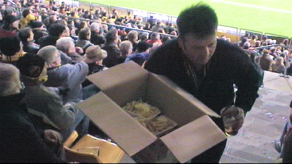

Z16'er voelt zich in zijn privacy aangetast vanwege snel oprukkende groei
hotelkamers met zicht op
onderhavig vak.
Het FP bestaat 10 jaar en laat dit weten middels een spandoek en een aantal
geleide projectielen.
Cor McR is over zijn midlife heen en bezoekt eindelijk weer het PLS.
Lamah schuift de bal naar Janssen.
Janssen schuift de bal achter Romero: 1-0, (4').
Gele kaart voor de Zeeuw na een overtreding op Van Tornhout.
Gele kaart voor Moreno. Toch was Vink een belabberde scheidsrechter die
veelal in het voordeel van de
kazen floot.

Super-service in het PLS.
Een van de vele vrije trappen van invaller Cziommer....
Treffer: 1-1, (80'). Uitgerekend Cziommer. Hierna volgden nog vele vrije
trappen voor AZ op exact dezelfde
plek.
In de eindfase werd van Tornhout gewisseld voor Vandamme die na zeer lange
tijd weer meespeelde.
Hij zou nog een prima scoringkans krijgen.
Cziommer en Vink, KOTZZZ....
Aandacht in de omloop voor het geleuter van Van Gaal.
In de Kickoff aandacht voor Anja.
Ook nog een Barcelona-gast in de Kick ( Eduardo, links).
Ons lachebekje op de foto met Lamah. Ook De Jong en Mardulier kwamen buurten
in het home.